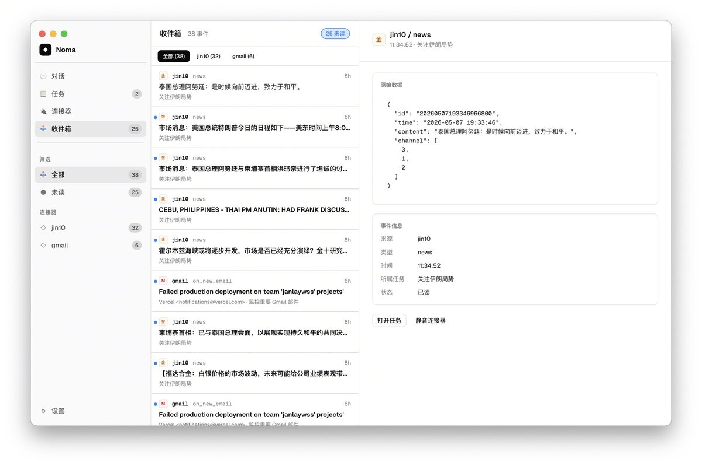
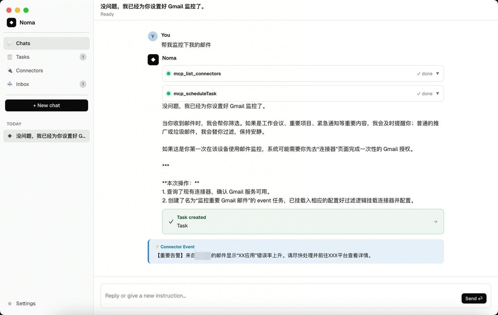

奶昔🥤
@realNyarime
@janlaywss 很强的MCP，后面应该会更强大


Janlay
@janlaywss
这段时间我一直在思考，如果让Agent有了对环境/上下文的感知，他会不会自己主动通知提醒用户，甚至主动去做一些事情？
基于这个想法，我开发了一个可以自感知上下文的agent项目。在这个项目里，创造了一个叫做连接器（Connector）的概念 https://t.co/ZhNHLZ4nE2